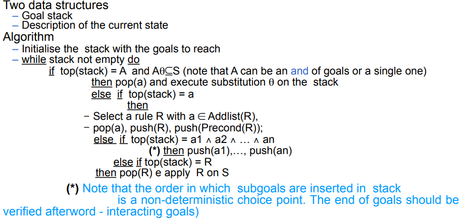

Strips
Strips (Stanford research institute problem solver) is a Planning algorithm / language. it is a type of Linear planning that uses both forward and backward strategies to compute the Search strategies . The states are represented with fluets true in a given state. Example: on(a, b), clear(b), ... A capital letter is a variable: on(X, b) -> on(a, b) or on(c, b) or ... The initial state cannot have variable but the goal state yes. The actions are represented as a tuple composed by:
- Preconditions: fluets that must be true in order to execute the action
- Delete: the fluets that will not be true after the action execution
- Add: the fluets that becomes true after the axiom execution -Sometimes we can have an "effected" list that glue together the add and remove lists (the remove fluets will have a not in front of them)
!!EVERYTHING NOT IN ADD / REMOVE WILL REMAIN UNCHANGED!!
algorithm execution
The algorithm uses a stack to push all action needed to reach the final state (one by one) and their respective preconditions. If a precondition is met it will be removed from the stack if not an action will be pushed on the stack to reach that precondition. After al preconditions are met the action will be performed on the current state. This process continues until the current state is equal to the final one. Pseudocode:  if A is an and goal (subgoal1 and subgoal2 and ...) and before applying its transformation we need to be sure that every precondition is met. This cannot be true even though we have previously met every single goal one by one because the satisfaction process of one goal may interact with the current state in a way that alter the satisfaction of the previously met goals.
Pitfalls
- very large space (a lot of possible solutions can emerge and each of them will be explored) -> we may use some sort of Heuristics to select the "best" solution to follow
- interacting goals (as stated before)